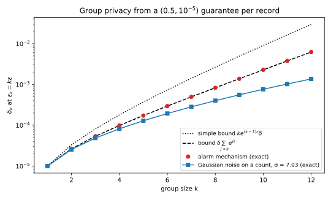
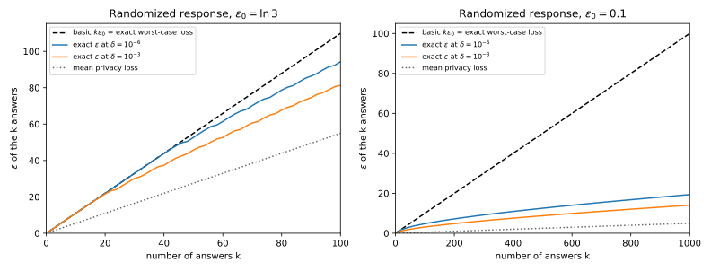

19 Post-processing, group privacy and composition
Once you have proved that a mechanism satisfies differential privacy (DP), you use it. You round its output, you protect users who each gave fifty records, and you answer a hundred queries rather than one. So three questions come up. Is a processed output still private? What does a guarantee for one record give for a group of \(k\) records? And what guarantee holds for many mechanisms on the same data?
The answers are the three properties that make DP usable in engineering. Two datasets \(D\) and \(D'\) are neighbours, written \(D \sim D'\), when they differ by one added or removed record, unless a section says otherwise. One idea organizes all three properties: the privacy loss of an output \(y\) from the definition of differential privacy, the log of how much more likely \(y\) is on \(D\) than on \(D'\): \[L_{D,D'}(y) = \ln\frac{p_{M(D)}(y)}{p_{M(D')}(y)}. \tag{19.1}\] Here \(p_{M(D)}\) is the probability, or density, that the mechanism \(M\) gives to \(y\) on \(D\). Pure \(\varepsilon\)-DP, the case \(\delta = 0\) of \((\varepsilon, \delta)\)-DP, keeps this loss within \([-\varepsilon, \varepsilon]\) for every output and every neighbouring pair. Along a path of datasets, or over mechanisms with independent coins (internal randomness), likelihood ratios multiply, so privacy losses add, and that costs privacy. Processing instead merges outputs and averages their likelihood ratios, which is free.
The running example is randomized response at level \(\varepsilon_0 = \ln 3\): a person whose record is one private bit reports it truthfully with probability \(\frac34\) and flips it with probability \(\frac14\). The report 1 has probability \(\frac34\) if the bit is 1 and \(\frac14\) if it is 0, a ratio of 3, and the report 0 has the ratio \(\frac13\). So the privacy loss is \(\pm\ln 3\) on every output. The output distributions \(M(D)\) and \(M(D')\) are written \(P\) and \(Q\), with mass functions or densities \(p\) and \(q\), and a sum over continuous outputs means an integral.
19.1 Post-processing
A private output is rarely published as is. You round a noisy count, fit a model to noisy marginals, or let an analyst decide what to do next, each time without a new look at the data. Can such processing undo the protection? It cannot, because a processed output merges outputs, and its likelihood ratio is an average of theirs, which stays in the band \([e^{-\varepsilon}, e^\varepsilon]\). For approximate DP the privacy loss is not bounded, so the proof works with events and needs one small lemma first.
In its event form, from the definition chapter, \((\varepsilon, \delta)\)-DP says that \(\Pr_P[S] \le e^\varepsilon\Pr_Q[S] + \delta\) for every set \(S\) of outputs and every ordered neighbouring pair. Step 1 of the proof of post-processing turns an event about the processed output into a soft rule on the original output, which accepts each output with some probability. The lemma says that soft rules obey the same bound.
Lemma 19.1 (Soft tests obey the definition) Let \(M\) be \((\varepsilon, \delta)\)-DP, fix a neighbouring pair with output distributions \(P = M(D)\) and \(Q = M(D')\), and let \(g\) be any function of the output with values in \([0, 1]\). Then \[\mathbb E_P[g(Y)] \le e^\varepsilon\,\mathbb E_Q[g(Y)] + \delta. \tag{19.2}\]
Proof. The gap \(\mathbb E_P[g] - e^\varepsilon\mathbb E_Q[g]\) is \(\sum_y g(y)\big(p(y) - e^\varepsilon q(y)\big)\). By the soft-event part of Lemma 3.4 with \(\gamma = e^\varepsilon\), it is at most its value at the event \(B = \{y : p(y) > e^\varepsilon q(y)\}\), which is \(\Pr_P[B] - e^\varepsilon\Pr_Q[B]\). The definition, applied to \(B\), bounds that by \(\delta\).
The value at \(B\) is the largest of \(\Pr_P[S] - e^\varepsilon\Pr_Q[S]\) over events \(S\), the hockey-stick divergence \[E_{e^\varepsilon}(P\|Q) = \sum_y\big(p(y) - e^\varepsilon q(y)\big)_+, \tag{19.3}\] where \((x)_+ = \max(x, 0)\) keeps the positive parts (Divergences). So \(M\) is \((\varepsilon, \delta)\)-DP exactly when that divergence is at most \(\delta\) for every ordered neighbouring pair. The smallest such \(\delta\) at each \(\varepsilon\) is the privacy profile \(\delta(\varepsilon)\) of \(M\), which the script computes exactly for every mechanism in this chapter.
To cover randomized processing, describe it as a channel \(K\): \(K(z \mid y)\) is the probability that the processing outputs \(z\) when its input is \(y\). A deterministic function \(f\) is the case \(K(z \mid y) = \mathbf 1[z = f(y)]\), which is 1 when \(z = f(y)\) and 0 otherwise. The processed output on \(D\) has the distribution \(PK(z) = \sum_y p(y)K(z \mid y)\), which weights each \(y\) by how likely it is to become \(z\), and \(L^f_{D,D'}(z)\) is its privacy loss. The theorem says that processing never makes \(D\) and \(D'\) easier to tell apart.
Theorem 19.1 (Post-processing) Let \(M\) be \((\varepsilon, \delta)\)-DP and let \(f\) be any randomized function of its output whose coins are independent of the data and of \(M\)’s coins. Then \(f \circ M\), the mechanism \(D \mapsto f(M(D))\), is \((\varepsilon, \delta)\)-DP. In terms of the channel \(K\) of \(f\), for every neighbouring pair the hockey-stick divergence can only go down, and so can the largest privacy loss: \[E_{e^\varepsilon}\big(PK\,\|\,QK\big) \le E_{e^\varepsilon}(P\|Q), \qquad \max_z\big|L^{f}_{D,D'}(z)\big| \le \max_y\big|L_{D,D'}(y)\big|. \tag{19.4}\]
Proof. The plan is to turn any event about the processed output into a soft test on the original output and apply Lemma 19.1, then to take the privacy-loss form from the data processing inequality (DPI).
- Fix an event \(S\) of processed outputs. Let \(g(y) = \sum_{z \in S}K(z \mid y)\), the probability that the processing of \(y\) lands in \(S\). It is a probability, so it takes values in \([0, 1]\). It does not depend on the data, because \(f\) does not look at the data, so the same \(g\) serves for \(D\) and for \(D'\).
- Average over the output. To land in \(S\), the mechanism first produces some \(y\), and then the processing sends it into \(S\) with probability \(g(y)\). So \(\Pr[f(M(D)) \in S] = \sum_y p(y)g(y) = \mathbb E_P[g(Y)]\), and the same with \(q\) for \(D'\).
- Apply the lemma to \(g\). Lemma 19.1 gives \(\mathbb E_P[g] \le e^\varepsilon\mathbb E_Q[g] + \delta\), that is \(\Pr[f(M(D)) \in S] \le e^\varepsilon\Pr[f(M(D')) \in S] + \delta\). This holds for every \(S\) and every ordered neighbouring pair, which is the event form of \((\varepsilon, \delta)\)-DP for \(f \circ M\). The hockey-stick inequality of Equation 19.4 is the same statement for the worst event \(S\).
- The privacy-loss form. The largest privacy loss of a pair is its max-divergence \(D_\infty\), in each order of the pair. By the data-processing inequality Theorem 3.5, which covers \(D_\infty\), no channel raises it, which is the second inequality of Equation 19.4. Its proof (Divergences) writes \(e^{L^f(z)}\) as an average of the \(e^{L(y)}\) of the outputs \(y\) that can produce \(z\), each weighted by its share of the \(D'\)-probability of \(z\).
So nothing downstream needs a new proof. A model trained on DP statistics, or a plot of them, never reads the data again and inherits the guarantee. Attackers are covered too: a membership-inference attacker of Part 2 applies a channel to \(y\), so the bounds of the definition chapter on its error rates hold for every attack. An analyst who picks the next question from earlier private answers is post-processing them, but the answer to that question is a new mechanism (Section 19.3; Adaptive data analysis).
Invertible processing, such as a change of units, keeps the privacy loss exactly, since nothing is averaged. Processing that merges outputs with different losses lowers it, usually only a little. The one condition is that \(f\) must not read the data, because step 1 needed the same \(g\) under \(D\) and \(D'\). So a lookup of the exact count of the noisy winning category is a second, non-private mechanism (Section 19.5).
Example 19.1 Collect answers with randomized response at \(\varepsilon_0 = \ln 3\). Before you publish, flip each answer with probability \(r = \frac14\) with a fresh coin. The published \(z = 1\) comes either from a first answer 1 that was kept or from a 0 that was flipped. Each path’s probability is the product of its two steps, and Table 19.1 follows both paths.
| Path to \(z = 1\) | Probability under bit 1 (\(D\)) | Probability under bit 0 (\(D'\)) | \(e^{L(y)}\) of the first answer |
|---|---|---|---|
| \(y = 1\), kept | \(\frac34 \cdot \frac34 = \frac9{16}\) | \(\frac14 \cdot \frac34 = \frac3{16}\) | 3 |
| \(y = 0\), flipped | \(\frac14 \cdot \frac14 = \frac1{16}\) | \(\frac34 \cdot \frac14 = \frac3{16}\) | \(\frac13\) |
| total | \(\frac{10}{16} = 0.625\) | \(\frac6{16} = 0.375\) | — |
The likelihood ratio of \(z = 1\) is \(0.625/0.375 = \frac53\), the average of the first answer’s ratios \(3\) and \(\frac13\), each weighted by its share \(\frac12\) of the \(D'\) column, as step 4 of the proof says. The published \(z = 0\) has the ratio \(\frac35\), so the published answers are \(\ln\frac53 = 0.5108\)-DP, less than \(\ln 3 = 1.0986\). The right panel of Figure 19.1 shows \(\varepsilon\) for every flip probability. It falls to 0 at \(r = \frac12\), where the published bit is a fair coin.
A noisy count shows that processing can also lower \(\delta\) and keep \(\varepsilon\). Add Laplace noise of scale 1 to a count whose neighbouring values are 0 and 1, so that the outputs are \(\mathrm{Lap}(0, 1)\) and \(\mathrm{Lap}(1, 1)\), with densities \(\frac12e^{-|y|}\) and \(\frac12e^{-|y - 1|}\). Their privacy loss \(|y - 1| - |y|\) lies within \([-1, 1]\) by the triangle inequality, so the noisy count is 1-DP (The Laplace and Gaussian mechanisms). Table 19.2 and the left panel of Figure 19.1 give the exact privacy profiles of the noisy count, of the count rounded to an integer, and of the bit “is the noisy count above \(\frac12\)?”.
| Published | Smallest pure \(\varepsilon\) | \(\delta(0.25)\) | \(\delta(0.5)\) |
|---|---|---|---|
| Noisy count \(c + Z\) | 1.0000 | 0.3127 | 0.2212 |
| Rounded to an integer | 1.0000 | 0.3073 | 0.1967 |
| Only “is \(c + Z > \frac12\)?” | 0.8318 | 0.3073 | 0.1967 |

Rounding keeps the pure \(\varepsilon\). Each rounded value at or below \(-1\) gathers outputs that all lie left of 0, where the densities have the constant ratio \(e\), and an average of equal ratios is that ratio. So those rounded values still have loss 1. But rounding lowers \(\delta(\varepsilon)\), because the cell \([-\frac12, \frac12]\) mixes losses from \(-1\) to \(1\). The one-bit summary is the most private. Its “yes” has probability \(\frac12e^{-1/2} = 0.3033\) when the count is 0 and \(0.6967\) when it is 1, a privacy loss of \(\ln(0.6967/0.3033) = 0.8318\).
19.2 Group privacy
The definition protects one record, but people are not rows. A user of a messaging app sends hundreds of messages, and a household shares an address. To bound what an adversary learns about all \(k\) records of one user, you need a guarantee for datasets that differ in \(k\) records. Group privacy derives it from the one-record guarantee, at a price linear in \(k\) for \(\varepsilon\) and exponential in \(k\) for \(\delta\).
Say that \(D\) and \(D''\) are at distance \(k\) if a path \(D = D_0 \sim D_1 \sim \dots \sim D_k = D''\) joins them, with one changed record per step. The idea is to apply the one-record guarantee once per step. Each step multiplies the bound by \(e^\varepsilon\) and adds a slack \(\delta\), which later steps multiply again, so the slacks pile up in a geometric sum.
Theorem 19.2 (Group privacy) Let \(M\) be \((\varepsilon, \delta)\)-DP. Then for every pair of datasets \(D\) and \(D''\) at distance \(k\) and every event \(S\), \[\Pr[M(D) \in S] \le e^{k\varepsilon}\Pr[M(D'') \in S] + \delta_k, \qquad \delta_k = \delta\sum_{j=0}^{k-1}e^{j\varepsilon} = \delta\,\frac{e^{k\varepsilon} - 1}{e^\varepsilon - 1} \le k\,e^{(k-1)\varepsilon}\delta. \tag{19.5}\] In particular, pure \(\varepsilon\)-DP gives pure \(k\varepsilon\)-DP for groups of size \(k\).
Proof. The plan is to prove the pure case through the privacy loss, which adds along the path, and the approximate case through events, chaining the one-step bound \(k\) times.
- Pure DP: telescope the likelihood ratio along the path. Multiply and divide by the densities at the intermediate datasets \(D_1, \dots, D_{k-1}\). Each appears once in a numerator and once in a denominator, so they cancel and only the two ends remain: \[\frac{p_{M(D_0)}(y)}{p_{M(D_k)}(y)} = \prod_{i=1}^k\frac{p_{M(D_{i-1})}(y)}{p_{M(D_i)}(y)}, \qquad\text{so}\qquad L_{D_0,D_k}(y) = \sum_{i=1}^k L_{D_{i-1},D_i}(y). \tag{19.6}\]
- Bound each term. Each pair \(D_{i-1} \sim D_i\) is neighbouring, so \(|L_{D_{i-1},D_i}(y)| \le \varepsilon\) by pure DP.
- Add. A sum of \(k\) terms, each between \(-\varepsilon\) and \(\varepsilon\), lies between \(-k\varepsilon\) and \(k\varepsilon\), so \(|L_{D_0,D_k}(y)| \le k\varepsilon\) for every \(y\), which is pure \(k\varepsilon\)-DP.
- Approximate DP: one step. With \(\delta > 0\) the privacy loss is no longer bounded, so there is nothing to add up, and the proof chains the event form instead. Fix an event \(S\) and write \(s_i\) for the probability \(\Pr[M(D_i) \in S]\). The definition applied to the neighbouring pair \(D_{i-1} \sim D_i\) gives \(s_{i-1} \le e^\varepsilon s_i + \delta\).
- Substitute the next step into the right side. The bound on \(s_1\) goes in place of \(s_1\): \[s_0 \le e^\varepsilon s_1 + \delta \le e^\varepsilon\big(e^\varepsilon s_2 + \delta\big) + \delta = e^{2\varepsilon}s_2 + \delta(1 + e^\varepsilon). \tag{19.7}\]
- Repeat \(k\) times. By induction, \(s_0 \le e^{k\varepsilon}s_k + \delta(1 + e^\varepsilon + \dots + e^{(k-1)\varepsilon})\). Each new \(\delta\) enters before \(k - 1, k - 2, \dots, 0\) more multiplications by \(e^\varepsilon\), which is where the geometric sum comes from.
- Simplify. The geometric sum is \(\frac{e^{k\varepsilon} - 1}{e^\varepsilon - 1}\), because multiplying it by \(e^\varepsilon - 1\) cancels all terms but the first and last. Each of its \(k\) terms is at most the largest one, \(e^{(k-1)\varepsilon}\), which gives the simpler but looser \(k\,e^{(k-1)\varepsilon}\delta\).
No better bound holds for all \((\varepsilon, \delta)\)-DP mechanisms. The mechanism below shows it, because it has an event on which every one-step bound of steps 4 to 6 is an equality.
Proposition 19.1 (The alarm mechanism attains the bound) Fix \(\varepsilon > 0\), \(\delta \in (0, 1)\) and a cap \(K\) on the count of some kind of record. On a count \(c \le K\) the alarm mechanism outputs “alarm” with probability \[a_c = \delta\sum_{j=0}^{K-c-1}e^{j\varepsilon} \tag{19.8}\] and “quiet” otherwise, and on a count above \(K\) it always outputs “quiet”. If \(a_0 \le (e^\varepsilon + \delta)/(e^\varepsilon + 1)\), the mechanism is \((\varepsilon, \delta)\)-DP for neighbouring counts, which differ by 1, and for the counts \(0\) and \(k \le K\) it meets Equation 19.5 with equality on the event “alarm”.
Proof.
- One step is tight. Pulling the first term \(\delta\) out of the sum and a factor \(e^\varepsilon\) out of the rest shows that \(a_c = e^\varepsilon a_{c+1} + \delta\) for \(c < K\). So each neighbouring pair meets the event form with equality on “alarm”.
- The mechanism is private. The other three checks, “alarm” in the reverse order and “quiet” in both orders, hold exactly when \(a_0 \le (e^\varepsilon + \delta)/(e^\varepsilon + 1)\). Section J.8 in the appendices proves it. A simpler sufficient condition is \(a_0 \le 1 - e^{-\varepsilon}\), because \((1 - e^{-\varepsilon})(e^\varepsilon + 1) = e^\varepsilon - e^{-\varepsilon} < e^\varepsilon + \delta\). With \(\varepsilon = 0.5\), \(\delta = 10^{-5}\) and \(K = 10\), the script finds \(a_0 = 2.272\times10^{-3}\) and a largest \(\delta(0.5)\) over neighbouring counts of \(1.000\times10^{-5}\).
- The chain is tight. Along the path of counts \(0, 1, \dots, k\), step 5 of the proof of Theorem 19.2 substitutes equalities into equalities, so \(a_0 - e^{k\varepsilon}a_k = \delta\sum_{j=0}^{k-1}e^{j\varepsilon} = \delta_k\).
Pure DP degrades linearly. A \(0.1\)-DP guarantee per record is \(10\)-DP for a user with 100 records, which is almost nothing, since a likelihood ratio of up to \(e^{10} \approx 22{,}000\) lets an adversary be nearly certain. This is the formal version of the “correlated records” caveat of the definition chapter. For approximate DP the \(\delta\) term grows exponentially: with \(\varepsilon = 1\) and \(k = 10\) it is \(\delta_k = \frac{e^{10} - 1}{e - 1}\,\delta = 12818.3\,\delta\). And \(\delta\) must already be much smaller than \(1/n\) for \(n\) records (the definition chapter), so group privacy for large groups is often vacuous.
A specific mechanism can do much better than the generic bound. With Gaussian noise on a count, a group of \(k\) records shifts the count by \(k\), so its exact group profile is that of a Gaussian pair with a larger shift (Part 4). The better fix is often to make neighbours differ in one user’s records, bound each user’s contribution, and prove DP at that level.
Example 19.2 For randomized response a group of \(k\) records is \(k\) people, and the reports in which all \(k\) favour the same side have privacy loss exactly \(k\ln 3\), so the pure bound is exact. A noisy count shows the telescoping of step 1 at work. Take \(\mathrm{Lap}(0, 1)\) noise and the path of counts \(0, 1, 2, 3\), so \(k = 3\). With density \(\frac12e^{-|y - c|}\) at true count \(c\), the privacy loss between counts \(c\) and \(c + 1\) is \(L_{c,c+1}(y) = |y - c - 1| - |y - c|\), which says how much farther \(y\) is from \(c + 1\) than from \(c\). Table 19.3 adds the steps at three outputs.
| Output \(y\) | \(L_{0,1}(y)\) | \(L_{1,2}(y)\) | \(L_{2,3}(y)\) | Sum | Direct: \(\lvert y - 3\rvert - \lvert y\rvert\) |
|---|---|---|---|---|---|
| \(-2\) | \(3 - 2 = 1\) | \(4 - 3 = 1\) | \(5 - 4 = 1\) | 3 | \(5 - 2 = 3\) |
| \(0.5\) | \(0.5 - 0.5 = 0\) | \(1.5 - 0.5 = 1\) | \(2.5 - 1.5 = 1\) | 2 | \(2.5 - 0.5 = 2\) |
| \(1.5\) | \(0.5 - 1.5 = -1\) | \(0.5 - 0.5 = 0\) | \(1.5 - 0.5 = 1\) | 0 | \(1.5 - 1.5 = 0\) |
At \(y = -2\) the output lies left of every count on the path, so every step points the same way and the sum reaches 3. At \(y = 1.5\) the steps point in different directions and cancel. The script confirms that the rounded noisy count has pure \(\varepsilon\) exactly \(k\) for counts that differ by \(k = 1, 2, 3, 5\), so for a count group privacy is tight.
For approximate DP, protect each record at \((\varepsilon, \delta) = (0.5, 10^{-5})\). Table 19.4 compares the bound with the exact \(\delta_k\) of the alarm mechanism with \(K = 10\) and of a count with Gaussian noise of standard deviation \(\sigma\). For two normal distributions with standard deviation \(\sigma\) and means \(s\) apart, the exact \(\delta\) is a difference of two normal tail probabilities (Divergences). The script solves it for the \(\sigma\) that gives \(\delta(0.5) = 10^{-5}\) at shift 1, which is \(\sigma = 7.0318\), and evaluates it at the shift \(s = k\). Figure 19.2 plots the same numbers up to \(k = 12\).
| Group size \(k\) | \(\varepsilon_k = k\varepsilon\) | \(\delta_k\) from Equation 19.5 | Simple form \(k e^{(k-1)\varepsilon}\delta\) | Alarm mechanism, exact | Gaussian count, exact |
|---|---|---|---|---|---|
| 1 | 0.5 | \(1.000 \times 10^{-5}\) | \(1.000 \times 10^{-5}\) | \(1.000 \times 10^{-5}\) | \(1.000 \times 10^{-5}\) |
| 2 | 1 | \(2.649 \times 10^{-5}\) | \(3.297 \times 10^{-5}\) | \(2.649 \times 10^{-5}\) | \(2.551 \times 10^{-5}\) |
| 3 | 1.5 | \(5.367 \times 10^{-5}\) | \(8.155 \times 10^{-5}\) | \(5.367 \times 10^{-5}\) | \(4.858 \times 10^{-5}\) |
| 5 | 2.5 | \(1.724 \times 10^{-4}\) | \(3.695 \times 10^{-4}\) | \(1.724 \times 10^{-4}\) | \(1.288 \times 10^{-4}\) |
| 10 | 5 | \(2.272 \times 10^{-3}\) | \(9.002 \times 10^{-3}\) | \(2.272 \times 10^{-3}\) | \(7.592 \times 10^{-4}\) |

The alarm mechanism attains the geometric sum at every \(k\). The simple form is looser by a factor \(1.24\) at \(k = 2\) and \(3.96\) at \(k = 10\), so use the sum. The Gaussian count is a factor \(2.99\) below the bound at \(k = 10\). Even so, for a user with 10 records the record-level \((0.5, 10^{-5})\) becomes \((5, 7.6 \times 10^{-4})\), a weak guarantee.
19.3 Basic sequential composition
An analyst asks \(k\) queries of the same dataset, each with fresh noise. Each output alone is private, but an adversary sees all of them. What guarantee holds for the whole transcript \((y_1, \dots, y_k)\), even when each mechanism is chosen after the previous outputs? For pure DP the answer rests on one fact about independent coins, which the proof needs and parallel composition reuses: probabilities multiply, so privacy losses add.
Lemma 19.2 (Privacy losses of independent outputs add) Let \(Y = (Y_1, Y_2)\), where \(Y_1\) and \(Y_2\) are produced with independent coins, so that \(p(y_1, y_2) = p_1(y_1)p_2(y_2)\) on \(D\) and likewise \(q(y_1, y_2) = q_1(y_1)q_2(y_2)\) on \(D'\). Then the privacy loss of the pair is the sum of the privacy losses of its parts, \[L(y_1, y_2) = \ln\frac{p_1(y_1)p_2(y_2)}{q_1(y_1)q_2(y_2)} = L_1(y_1) + L_2(y_2). \tag{19.9}\] The same holds when the second output depends on the first, with the conditional probabilities \(p_2(y_2 \mid y_1)\) and \(q_2(y_2 \mid y_1)\) in place of \(p_2(y_2)\) and \(q_2(y_2)\).
Proof.
- Independent outputs. The probability of seeing both outputs is the product of their probabilities, and the logarithm of a product of two ratios is the sum of the two logarithms.
- Dependent outputs. The chain rule of probability writes any joint probability as “first, times second given first”, \(p(y_1, y_2) = p_1(y_1)\,p_2(y_2 \mid y_1)\), and the same on \(D'\). The same logarithm then gives the same sum, with the conditional loss \(\ln\frac{p_2(y_2 \mid y_1)}{q_2(y_2 \mid y_1)}\) as its second term.
In the theorem below, each mechanism \(M_i\) may also read the previous outputs, as an analyst picks the next query after the last answer. This is adaptive composition, and non-adaptive composition is the case where \(M_i\) ignores them. The condition is that each step is private whatever the earlier outputs were. Section B.1 in the appendices derives the theorem from scratch, with worked numbers.
Theorem 19.3 (Basic composition) Let \(M_1, \dots, M_k\) run on the same dataset with independent coins, where \(M_i\) may read the previous outputs \(y_1, \dots, y_{i-1}\). If, for every fixed value of the previous outputs, \(D \mapsto M_i(D; y_1, \dots, y_{i-1})\) is \((\varepsilon_i, \delta_i)\)-DP, then the mechanism that releases \((y_1, \dots, y_k)\) is \[\Big(\sum_{i=1}^k\varepsilon_i,\ \sum_{i=1}^k\delta_i\Big)\text{-DP}. \tag{19.10}\] For pure DP the bound \(\sum_i\varepsilon_i\) is the exact worst-case privacy loss whenever each \(M_i\) attains its own worst case at outputs that can occur together.
Proof. The plan is to prove the pure case by adding privacy losses with Lemma 19.2. The approximate case takes two mechanisms, since induction on \(k\) does the rest. It splits an event over the first output, applies the second mechanism’s guarantee for each value of it, and applies the first mechanism’s guarantee to what is left, a soft test of the first output.
- Pure DP: add the losses. Write \(y_{<i} = (y_1, \dots, y_{i-1})\), and \(L^{(i)}(y_i;\,y_{<i})\) for the privacy loss of \(M_i\) with its previous outputs fixed. By Lemma 19.2, applied \(k - 1\) times in its dependent form, the loss of the transcript is \(\sum_{i=1}^k L^{(i)}(y_i;\,y_{<i})\). Each term is at most \(\varepsilon_i\) in absolute value by assumption, so the sum is at most \(\sum_i\varepsilon_i\) at every transcript, which is pure \(\sum_i\varepsilon_i\)-DP. When every \(M_i\) attains \(\varepsilon_i\) at outputs that can occur together, the sum is attained, which is the exactness claim.
- Approximate DP: split an event over the first output. Take \(k = 2\), and write \(P\) and \(Q\) for the distribution of the transcript \((Y_1, Y_2)\) on \(D\) and on \(D'\). For a set \(S\) of transcripts, let \(S_{y_1} = \{y_2 : (y_1, y_2) \in S\}\), the second outputs that complete \(y_1\) into \(S\). The transcript lands in \(S\) when the first output is some \(y_1\) and the second lands in \(S_{y_1}\), so \[P(S) = \sum_{y_1}p_1(y_1)\,P_2^{y_1}(S_{y_1}), \tag{19.11}\] where \(p_1\) is the mass function of \(M_1(D)\) and \(P_2^{y_1}\) the distribution of \(M_2(D; y_1)\). Write \(q_1\) and \(Q_2^{y_1}\) for the same objects on \(D'\).
- Apply the second mechanism’s guarantee inside the sum. For each \(y_1\), \(P_2^{y_1}(S_{y_1}) \le e^{\varepsilon_2}Q_2^{y_1}(S_{y_1}) + \delta_2\), and also \(P_2^{y_1}(S_{y_1}) \le 1\) because it is a probability. So \(P_2^{y_1}(S_{y_1}) \le g(y_1) + \delta_2\) with \[g(y_1) = \min\big(1,\ e^{\varepsilon_2}Q_2^{y_1}(S_{y_1})\big) \in [0, 1]. \tag{19.12}\]
- Sum over \(y_1\). The weights \(p_1(y_1)\) add up to 1, so \(\delta_2\) comes out once: \(P(S) \le \mathbb E_{p_1}[g] + \delta_2\).
- Apply the first mechanism’s guarantee to \(g\). The function \(g\) takes values in \([0, 1]\), which is why it was capped at 1, so Lemma 19.1 gives \(\mathbb E_{p_1}[g] \le e^{\varepsilon_1}\mathbb E_{q_1}[g] + \delta_1\).
- Undo the cap. Since \(g(y_1) \le e^{\varepsilon_2}Q_2^{y_1}(S_{y_1})\), the average \(\mathbb E_{q_1}[g]\) is at most \(e^{\varepsilon_2}\sum_{y_1}q_1(y_1)Q_2^{y_1}(S_{y_1})\), which by step 2 on \(D'\) is \(e^{\varepsilon_2}Q(S)\).
- Combine. Steps 4 to 6 give \(P(S) \le e^{\varepsilon_1 + \varepsilon_2}Q(S) + \delta_1 + \delta_2\). Nothing used that \(M_2\) ignores \(y_1\), so this covers adaptive composition.
Basic composition is exact for the worst case, and the worst case is rare. For \(k\) randomized-response answers about the same bit, “every answer is true” has loss \(k\ln 3\) but probability \((\frac34)^k\). Typical transcripts mix truths with lies, whose losses cancel. Under \(D\), each answer adds \(+\varepsilon_0\) when it tells the truth, with probability \(t = e^{\varepsilon_0}/(1 + e^{\varepsilon_0})\), and \(-\varepsilon_0\) otherwise. So its mean loss is \(\varepsilon_0(2t - 1)\), which is \(\varepsilon_0/2\) for \(\varepsilon_0 = \ln 3\), and a sum of \(k\) such independent terms stays within a spread of order \(\varepsilon_0\sqrt k\) of its mean (Concentration). An \((\varepsilon, \delta)\) guarantee may ignore losses above \(\varepsilon\) of total probability at most \(\delta\). So a small \(\delta\) writes off the unlikely tail, and the \(\varepsilon\) you need grows like \(\sqrt k\) rather than \(k\), which is the advanced composition of Advanced and optimal composition.
The \(\delta\)s add without the inflation of group privacy, because each mechanism compares the same pair \(D, D'\), and step 4 of the proof just averages the second slack. Adaptivity is free, but only with budgets fixed in advance. Budgets chosen from the outputs (“stop when the answer is good enough”) need the privacy filters of Advanced and optimal composition.
Example 19.3 Start with an adaptive survey. Ask a person for a randomized-response answer with \(\varepsilon_1 = \ln 3\), then ask again with \(\ln 3\) if the answer was 1 and with \(0.5\) if it was 0. Level \(0.5\) tells the truth with probability \(e^{0.5}/(1 + e^{0.5}) = 0.6225\). So the second step depends on \(y_1\), but it is at most \(\ln 3\)-DP for each value of \(y_1\). In Table 19.5 each probability is the product of the two steps: for example, \((0, 1)\) under bit 1 is a lie and then the truth, \(\frac14 \times 0.6225 = 0.1556\).
| \((y_1, y_2)\) | Under bit 1 (\(D\)) | Under bit 0 (\(D'\)) | \(L = L^{(1)} + L^{(2)}\) |
|---|---|---|---|
| \((1, 1)\) | 0.5625 | 0.0625 | \(\ln 3 + \ln 3 = 2.1972\) |
| \((1, 0)\) | 0.1875 | 0.1875 | \(\ln 3 - \ln 3 = 0\) |
| \((0, 1)\) | 0.1556 | 0.2832 | \(-\ln 3 + 0.5 = -0.5986\) |
| \((0, 0)\) | 0.0944 | 0.4668 | \(-\ln 3 - 0.5 = -1.5986\) |
The answers \((1, 1)\) are two pieces of evidence pointing the same way, and \((1, 0)\) are two that cancel. The worst loss is \(2.1972 = \ln 3 + \ln 3\), exactly the bound with \(\varepsilon_2 = \max(\ln 3, 0.5)\), the largest budget the second step can have.
Now ask the same question \(k\) times with fresh randomized response at \(\varepsilon_0 = \ln 3\). If \(j\) answers equal 1, the privacy loss is \((2j - k)\ln 3\), and \(j\) is binomial with \(k\) trials and success probability \(\frac34\) when the bit is 1, or \(\frac14\) when it is 0. Figure 19.3 shows the loss for \(k = 10\). Table 19.6 gives the script’s exact numbers, with “exact \(\varepsilon\) at \(\delta = 10^{-6}\)” the smallest \(\varepsilon\) whose \(\delta(\varepsilon)\) is at most \(10^{-6}\).

| \(k\) | Basic bound \(k\varepsilon_0\) | Exact worst-case loss | \(\Pr_D[L = k\varepsilon_0] = (\frac34)^k\) | Mean loss under \(D\) | Exact \(\varepsilon\) at \(\delta = 10^{-6}\) |
|---|---|---|---|---|---|
| 1 | 1.099 | 1.099 | 0.75 | 0.549 | 1.099 |
| 10 | 10.986 | 10.986 | \(5.631 \times 10^{-2}\) | 5.493 | 10.986 |
| 20 | 21.972 | 21.972 | \(3.171 \times 10^{-3}\) | 10.986 | 21.972 |
| 50 | 54.931 | 54.931 | \(5.663 \times 10^{-7}\) | 27.465 | 52.680 |
| 100 | 109.861 | 109.861 | \(3.207 \times 10^{-13}\) | 54.931 | 94.290 |
A slack \(\delta\) helps only if transcripts with large loss have total probability below \(\delta\). If \(\varepsilon\) is a small \(\xi\) below \(k\varepsilon_0\), the worst transcript alone adds about \((\frac34)^k\xi\) to the hockey-stick divergence, because its term \(p - e^{\varepsilon}q\) is then \(p(1 - e^{-\xi}) \approx p\,\xi\), with \(p = (\frac34)^k\). So at \(k = 20\) the allowed \(\xi\) is only about \(10^{-6}/(3.171 \times 10^{-3}) \approx 3 \times 10^{-4}\), and the exact \(\varepsilon\) equals the basic bound to three decimals. At \(k = 50\) the worst case drops below \(10^{-6}\), and at \(k = 100\) the slack buys \(109.861 - 94.290 = 15.6\). With a smaller budget per answer the gain is much larger: at \(\varepsilon_0 = 0.1\) and \(k = 1000\) the basic bound is 100, and the exact \(\varepsilon\) at \(\delta = 10^{-6}\) is 19.345 (Figure 19.4).

The same gap appears for approximate-DP mechanisms. Take \(k\) counts with Gaussian noise, each calibrated to \((0.5, 10^{-5})\) with \(\sigma = 7.0318\). One record shifts each noisy count by 1, and \(k\) independent Gaussians shifted by 1 carry the same evidence as one shifted by \(\sqrt k\) (Section B.3 in the appendices derives this). By Table 19.7, basic composition overstates \(\varepsilon\) for ten queries by a factor of \(5/1.504 = 3.3\).
| \(k\) | Basic: \((k\varepsilon, k\delta)\) | Exact \(\varepsilon\) at the same \(\delta = k \times 10^{-5}\) |
|---|---|---|
| 1 | \((0.5, 10^{-5})\) | 0.500 |
| 2 | \((1, 2 \times 10^{-5})\) | 0.694 |
| 4 | \((2, 4 \times 10^{-5})\) | 0.966 |
| 10 | \((5, 10^{-4})\) | 1.504 |
19.4 Parallel composition
A histogram counts people in disjoint bins. Sequential composition would charge \(d\varepsilon\) for \(d\) bins, which is far too pessimistic, because one person’s record lands in one bin only. Parallel composition makes that precise for the two common neighbouring relations. Under add/remove, neighbours differ by one added or removed record. Under replace, neighbours have the same size and differ in the content of one record, which is a removal followed by an addition.
Split the data universe into disjoint parts \(U_1, \dots, U_d\) by a rule that may depend on a record’s content but not on the rest of the dataset, and run \(M_i\) on \(D \cap U_i\), the records in part \(i\). A changed record touches only its own part, so you pay only that part’s budget.
Theorem 19.4 (Parallel composition) Let \(U_1, \dots, U_d\) be a partition of the data universe fixed in advance, and let \(M_i\) run on \(D \cap U_i\) with independent coins, each \((\varepsilon_i, \delta_i)\)-DP under add/remove. Then the release \((M_1(D \cap U_1), \dots, M_d(D \cap U_d))\) is \[\big(\max_i\varepsilon_i,\ \max_i\delta_i\big)\text{-DP under add/remove}. \tag{19.13}\] Under replace, a record that moves from part \(a\) to part \(b \ne a\) costs \((\varepsilon_a + \varepsilon_b, \delta_a + \delta_b)\), and one replaced within part \(a\) costs that part’s guarantee for two add/remove steps, at most group privacy with \(k = 2\); for pure DP with equal budgets both cases give \(2\varepsilon\). If the parts are fixed slots, so that record \(i\) always goes to part \(i\), a replacement changes one part only and the cost is \((\max_i\varepsilon_i, \max_i\delta_i)\) again.
Proof.
- Add/remove changes one part. If \(D' = D \cup \{x\}\), then \(x\) lies in exactly one part \(U_j\), because the parts are disjoint and cover the universe. For \(i \ne j\), \(D \cap U_i = D' \cap U_i\), so \(M_i\) gets the same input and has the same output distribution on both.
- Pure DP: the other losses are zero. By Lemma 19.2 the privacy loss of the whole release is \(\sum_iL^{(i)}\), and \(L^{(i)} \equiv 0\) for \(i \ne j\) because the two distributions are equal and their ratio is 1. So \(|L| = |L^{(j)}| \le \varepsilon_j \le \max_i\varepsilon_i\).
- Approximate DP: condition on the unchanged parts. Let \(W\) be the outputs of the parts \(i \ne j\), which have the same distribution on \(D\) and \(D'\) and are independent of \(Y_j\). Given \(W\), the release lands in an event \(S\) when \(Y_j\) falls in \(S_W\), the set of \(y_j\) completing \(W\) into \(S\). So the probability of \(S\) is the average over \(W\) of \(\Pr[Y_j \in S_W]\). Inside that average, \(M_j\)’s guarantee bounds the probability on \(D\) by \(e^{\varepsilon_j}\) times that on \(D'\), plus \(\delta_j\), and averaging over the same \(W\) carries the bound to \(S\).
- Replace changes up to two parts. If \(D'\) replaces a record \(x \in U_a\) by \(x' \in U_b\), then \(D \cap U_a\) loses a record and \(D \cap U_b\) gains one: two add/remove steps on two independent mechanisms, which is a composition of two mechanisms (Theorem 19.3, with the other parts handled as in step 3), giving \((\varepsilon_a + \varepsilon_b, \delta_a + \delta_b)\). If \(a = b\), part \(a\) sees a removal and an addition, two neighbouring steps, which is Theorem 19.2 with \(k = 2\) inside one part. In fixed slots a replacement changes only slot \(i\), and steps 1 to 3 apply again.
So a histogram costs one \(\varepsilon\), not \(d\). Laplace noise of scale \(1/\varepsilon\) on each of \(d\) bins is \(\varepsilon\)-DP under add/remove, because an added record changes one bin by 1. Under replace it is \(2\varepsilon\)-DP, because a moved record changes two bins, so a histogram’s sensitivity is 2 under replace (The Laplace and Gaussian mechanisms).
The partition must not depend on the data. “Split the data at its median” changes when one record changes, which can move many records between parts, and then step 1 of the proof fails. Use fixed bins, or count the data-dependent split as a mechanism of its own.
Example 19.4 Local randomized response composes in parallel. Each of \(n\) people reports their own bit at \(\varepsilon_0 = \ln 3\), and each person is one slot, so the whole vector of \(n\) reports is \(\ln 3\)-DP for any \(n\), not \(n\ln 3\), under either neighbouring relation.
A two-bin histogram shows the factor of 2. Give each bin rounded \(\mathrm{Lap}(0, 1)\) noise, and let the script compute the exact pure \(\varepsilon\) of the pair under each relation. An added or removed record changes one bin by 1, so only that bin has privacy loss, and \(\varepsilon = 1.0000\). A record in bin 1 replaced by one in bin 2 moves bin 1 up by 1 and bin 2 down by 1. The worst output then has both noisy counts far out on the side that favours \(D\), where both step losses equal 1 at once, so \(\varepsilon = 2.0000\).
19.5 What composes and what doesn’t
The three properties hold under weak assumptions, so it is tempting to apply them where even those fail. Each assumption appeared in a proof. Post-processing needs an \(f\) that does not read the data. Composition needs independent coins, one neighbouring relation, and budgets fixed in advance. Table 19.8 collects the ways these break in practice. The commonest break, two releases that share one noise draw, is a total failure.
| Situation | Composes? | Why |
|---|---|---|
| Function of the output, own coins | Yes, at no cost | Post-processing (Theorem 19.1) |
| Another query on the same data, fresh noise, even chosen from the first answer | Yes, budgets add | Basic composition (Theorem 19.3) |
| Two queries sharing one noise draw | No | The noise cancels in a difference (Proposition 19.2) |
| “Post-processing” that reads the data again | No | It is a new mechanism, often a non-private one |
| Budgets chosen from earlier outputs | Not by Equation 19.10 | Needs privacy filters (Advanced and optimal composition) |
| Proved under add/remove, released under replace | Yes, at \((2\varepsilon, (1 + e^\varepsilon)\delta)\) | Group privacy with \(k = 2\), as in Equation 18.6 of the definition chapter |
| A DP release plus an exact statistic of the same data | No | The exact statistic is not DP |
When two releases share one noise draw, a subtraction removes the noise, and privacy fails completely.
Proof.
- The difference is noise-free. \((c_1 + Z) - (c_2 + Z) = c_1(D) - c_2(D)\), a deterministic function of the data.
- It changes between neighbours. If the difference is \(c\) on \(D\), it is \(c - 1\) on the neighbour \(D'\) without that record, because that record counts in \(c_1\) only.
- One event separates the two. The event “the difference equals \(c\)” has probability 1 on \(D\) and 0 on \(D'\), so the event form \(1 \le e^\varepsilon \cdot 0 + \delta\) fails for every \(\varepsilon\) unless \(\delta \ge 1\).
What broke is the product rule of Lemma 19.2, on which Theorem 19.3 rests: the transcript’s probability is no longer a product of the two mechanisms’ probabilities. So fresh randomness is part of the mechanism. The same seed for two mechanisms, a cached noise draw added to a related query, and noise reused across shards are all the shared-noise bug. An exact total published elsewhere can be subtracted from a DP release in the same way.
The neighbouring relation is part of the budget too. A guarantee proved under add/remove and reported under replace can be off by a factor of 2. To mix the two inside one accountant, the code that totals the budget, is a bug that comes back in Subsampling.
Example 19.5 Randomized response survives shared coins, because a second answer with the first answer’s coins repeats it, which is post-processing. Additive noise does not. The script simulates the differencing attack of Proposition 19.2 on two Laplace counts, the number of smokers and the number of smokers aged 40 or over. Alice is a smoker aged 30, so she counts only in the first. She is in the data with probability \(\frac12\), and the attacker guesses “in” when the difference of the two counts exceeds the midpoint of its two possible true values. Over 200,000 runs with \(\mathrm{Lap}(0, 1)\) noise, the attack with shared noise has accuracy \(1.0000\), because the difference is exact.
With fresh noise the same attack has accuracy \(0.6206\). The second count no longer depends on Alice, so no attack beats the first count alone, whose best accuracy is \(\frac12\) plus half the total variation distance between its two distributions (Divergences). For \(\mathrm{Lap}(0, 1)\) against \(\mathrm{Lap}(1, 1)\) the best event is “the output is above \(\frac12\)”, whose probabilities differ by \(1 - e^{-1/2}\), so the best accuracy is \(\frac12 + \frac12(1 - e^{-1/2}) = 0.6967\). The difference attack falls short of it because it adds the noise of the second count.
19.6 Code
The script code/properties.py computes every number in this chapter and draws every figure, from each mechanism’s exact output distributions on two neighbouring datasets. From the repository root:
uv run python code/part03-dp-foundations/properties.py| Experiment | Result |
|---|---|
| Randomized response \(\ln 3\), then flip with probability \(r\) | \(r = 0.1\): \(\varepsilon = 0.8473\); \(r = 0.25\): \(0.5108 = \ln\frac53\); \(r = 0.5\): 0 |
| Count + \(\mathrm{Lap}(0, 1)\), post-processed | Raw: \(\varepsilon = 1\), \(\delta(0.5) = 0.2212\); rounded: \(1.0000\), \(0.1967\); threshold: \(0.8318\), \(0.1967\) |
| Group privacy, pure | Rounded Laplace count, counts \(k\) apart: \(\varepsilon = k\) for \(k = 1, 2, 3, 5\) |
| Group privacy, \((0.5, 10^{-5})\) per record | Table 19.4; the alarm mechanism attains the bound at every \(k\) |
| \(k\) randomized-response answers | Table 19.6; \(\varepsilon_0 = 0.1\), \(k = 1000\): basic 100, exact 19.345 at \(\delta = 10^{-6}\) |
| Simulation, 10 answers, 200,000 runs | Mean loss 5.500 (exact 5.493); worst case in 0.0559 of runs (exact 0.0563) |
| Adaptive two-step survey | Table 19.5; worst loss 2.1972 \(= 2\ln 3\) |
| \(k\) Gaussian counts, \((0.5, 10^{-5})\) each | Table 19.7 |
| Two-bin histogram, rounded \(\mathrm{Lap}(0, 1)\) | Add/remove: \(\varepsilon = 1.0000\); replace across bins: \(2.0000\) |
| Shared against fresh noise, 200,000 runs | Attack accuracy 1.0000 against 0.6206; best possible with fresh noise 0.6967 |
tests/test_properties.py checks that the output still matches.
19.7 Summary
| Result | Statement | Use |
|---|---|---|
| Lemma 19.1 | \(\mathbb E_P[g] \le e^\varepsilon\mathbb E_Q[g] + \delta\) for every \(g\) with values in \([0, 1]\) | Approximate-DP proofs where a later stage depends on an earlier output |
| Theorem 19.1 | \(f \circ M\) is \((\varepsilon, \delta)\)-DP for any \(f\) that does not read the data | Privatize once, early; everything after is free, every attack of Part 2 included |
| Theorem 19.2 | \(k\varepsilon\) for datasets \(k\) records apart, with \(\delta_k = \delta\frac{e^{k\varepsilon} - 1}{e^\varepsilon - 1} \le ke^{(k-1)\varepsilon}\delta\) | Per-user guarantees; cheap only for small groups, so prefer user-level neighbours |
| Proposition 19.1 | The alarm mechanism meets Equation 19.5 with equality | No better generic bound exists, though Gaussian noise does better |
| Lemma 19.2 | \(L(y_1, y_2) = L_1(y_1) + L_2(y_2)\) for independent coins, also given \(y_1\) | The fact behind both compositions; it needs fresh noise |
| Theorem 19.3 | \((\sum\varepsilon_i, \sum\delta_i)\), also adaptive with budgets fixed in advance | Budgeting many queries; the worst case is exponentially rare, so for large \(k\) use the accountants of Advanced and optimal composition |
| Theorem 19.4 | \((\max\varepsilon_i, \max\delta_i)\) under add/remove for a fixed partition; twice that under replace | Histograms, per-group statistics, local randomized response |
| Proposition 19.2 | Two counts with one noise draw are not DP for any \(\delta < 1\) | Every composed mechanism needs its own fresh noise |
19.8 References
- Dwork & Roth, The Algorithmic Foundations of Differential Privacy (2014): Proposition 2.1 (post-processing), Theorem 2.2 (group privacy, pure), Theorem 3.16 (basic composition, approximate case in Appendix B) and §3.5. The standard reference for every statement here.
- Dwork, McSherry, Nissim & Smith, “Calibrating Noise to Sensitivity in Private Data Analysis” (TCC 2006): the paper that defined DP, where the guarantee for groups of records first appears.
- McSherry, “Privacy Integrated Queries” (SIGMOD 2009): parallel composition, and a system built on post-processing and composition as its only rules.
- Vadhan, “The Complexity of Differential Privacy” (2017), the opening sections: the same properties with careful proofs, at a more theoretical level.
- Near & Abuah, Programming Differential Privacy, chapters on the properties of DP: sequential and parallel composition and post-processing, with code.
- Kifer & Machanavajjhala, “No Free Lunch in Data Privacy” (SIGMOD 2011): why correlated records defeat a per-record guarantee, the problem group privacy addresses.
- Dwork, Rothblum & Vadhan, “Boosting and Differential Privacy” (FOCS 2010), and Kairouz, Oh & Viswanath, “The Composition Theorem for Differential Privacy” (ICML 2015): advanced and optimal composition, the subject of Advanced and optimal composition.
- Rogers, Roth, Ullman & Vadhan, “Privacy Odometers and Filters: Pay-as-you-Go Composition” (NeurIPS 2016): what changes when the budgets themselves are chosen adaptively.